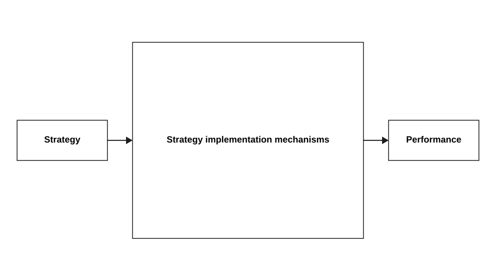

%%{init: {
'theme': 'base',
'themeVariables': { 'fontFamily': 'Arial' },
'flowchart': { 'curve': 'linear' }
}}%%
flowchart TD
A[Total Variance Profit]
A --> B[Other costs]
A --> C[Manufacturing costs]
A --> D[Revenue]
B --> B1[Administration]
B --> B2[Marketing & Sales]
B --> B3[R&D]
C --> C1[Variable costs]
C --> C2[Fixed costs]
C1 --> C1a[Material]
C1 --> C1b[Direct labor]
C1 --> C1c[Variable overhead]
D --> D1[Selling price]
D --> D2[Volume / Mix]
D2 --> D2a[Market share]
D2 --> D2b[Market size]
%% White background and horizontal centering
classDef default fill:#ffffff,stroke:#000,stroke-width:1px,color:#000;
%% Bold root + first level
classDef bold font-weight:bold,stroke-width:2px;
class A,B,C,D bold;
CPM (Control)
Strategy and Performance Management
August 18, 2026
Agenda
01Introductory Remarks10 min
02Time Value of Money35 min
03Cost Types15 min
04Management Control1 h
05Financial Performance Frameworks40 min
06Closing10 min
Introductory Remarks
Recap
Think briefly about the contents of our last class, then let’s discuss.
- Name the three primary financial statements and state which one captures a single point in time.
- Explain the difference between ROA and ROE in one sentence.
- Pick one performance measurement dysfunction and propose a prevention mechanism.
05:00
Learning Objectives
After this unit, you should have a solid understanding of
- time value of money concepts and net present value for investment evaluation;
- cost types and their role in budgeting and performance measurement;
- the management control framework linking strategy formulation to task execution;
- planning and budgeting processes that translate strategy into operational targets;
- different types of responsibility centers and their appropriate performance measures;
- variance analysis methodology for systematic performance diagnosis;
- and common performance management frameworks.
Time Value of Money
Overview
Money has different values at different points in time due to its earning potential: a euro today is worth more than a euro tomorrow because of:
- Opportunity cost: money can be invested and earn a return.
- Risk: future cash flows may be uncertain.
- Inflation: purchasing power decreases over time.
- Preference: people prefer current consumption to future consumption.
Key idea: to compare cash flows at different times, we convert them to a common basis: either all future values or all present values.
Future Value (FV)
The formula for calculating the future value (FV) from the present value (PV) is as follows:
\(FV = PV \times (1 + i)^n\)
- \(PV\) = present value
- \(i\) = interest rate per period
- \(n\) = number of periods
Example:
FV of 1,000 € in 3 years given a 5% annual interest rate:
\(FV = 1000 \times (1 + .05)^3 = 1,157.63\)
Present Value (PV)
Formula to discount the present value (PV) from a future value (FV) is as follows:
\(PV = \frac{FV}{(1 + i)^n}\)
- \(PV\) = present value
- \(i\) = interest rate per period
- \(n\) = number of periods
Example:
PV of 1,000 received in 3 years given a 5% annual interest rate:
\(PV = \frac{1000}{(1.05)^3} = 863.84\)
Annuities
An annuity is a series of equal payments or receipts occurring at regular intervals.
Future value of an annuity:
What is the future value of a constant annual cash flow have at the end of the period? \(FV_{OA} = PMT \times \frac{(1 + i)^n - 1}{i}\)
Present value of an annuity:
What is the present value today of a future annual cash flow for multiple years? \(PV_{OA} = PMT \times \frac{1 - (1 + i)^{-n}}{i}\)
\(PMT\) = payment per period
Net Present Value (NPV)
Net present value (NPV) is a financial metric used to evaluate the profitability of an investment or project.
Steps:
- Estimate cash inflows and outflows over time.
- Chose a discount rate1 and discount each cash flow to present value.
- Sum present values: if positive, project adds value.
\(NPV = \sum_{t=0}^n \frac{CF_t}{(1 + r)^t}\)
- \(CF_t\) = cash flow in period \(t\)
- \(r\) = discount rate
NPV Example
What is the NPV of an investment with cash flows shown below if the Weigthed Average Cost of Capital (WACC) is 10%?
| Year | Cash Flow (€) | Discount Factor (10%) | Present Value (€) |
|---|---|---|---|
| 0 | -10,000 | 1.0000 | -10,000.00 |
| 1 | 3,000 | 0.9091 | 2,727.27 |
| 2 | 4,000 | 0.8264 | 3,305.79 |
| 3 | 5,000 | 0.7513 | 3,756.57 |
| NPV | -210.37 |
Decision: Since NPV < 0, the project would not be accepted at a 10% WACC.
Cost Types
Overview
Understanding different cost types is essential for designing budgets, conducting variance analysis, and making informed resource allocation decisions within performance management systems.
- Direct vs. indirect costs: Traceable to specific products/services (direct) versus allocated overhead (indirect)
- Fixed vs. variable costs: Remain constant (fixed) versus change with activity levels (variable)
- Standard costing: Predetermined benchmarks for materials, labor, and overhead
- Activity-based costing (ABC): allocates overhead using cost drivers rather than volume
Management Control
Definition
Management control is the process by which managers influence other members of the organization to implement the organization’s strategies (Anthony & Govindarajan, 2014).
- It’s the bridge between strategy formulation (“what we want to do”) and task control (“how we execute specific tasks”)
- Focuses on ensuring that organizational resources are obtained and used effectively and efficiently to accomplish the organization’s objectives
Management Control x Strategy


Management Control Framework
Planning and Budgeting Process
The planning and budgeting cycle translates strategic objectives into operational plans through resource allocation and performance targets that guide organizational action (Anthony & Govindarajan, 2007).
Responsibility Center Design
Organizations structure accountability through different responsibility center types:
Cost centers focus on expense control, revenue centers on sales generation, profit centers on bottom-line results, and investment centers on return on invested capital (Anthony & Govindarajan, 2007).
The choice of center type determines KPI sets and bonus formulas; e.g., ROI/EVA for investment centers versus margin or contribution for profit centers.
Variance Analysis
Variance analysis compares actual results to planned targets to understand the causes of performance deviations and guide corrective action (Anthony & Govindarajan, 2007).
Variance Analysis Disaggregation
Financial Performance Frameworks
Overview
Du Pont Pyramid, Tableau du Bord, Balanced Scorecard, Performance Pyramid, and Performance Prism.
Framework Evolution
As organizations mature, control systems evolve from financial-only to integrated, adaptive systems.
Stages:
- Financial control focus (DuPont)
- Balanced approaches (BSC)
- Value-based management (EVA)
- Stakeholder integration (Performance Prism, Integrated Reporting)
- Dynamic, AI-enabled, real-time controls
Choose frameworks appropriate to current maturity and adaptability needs.
Exercise
Form groups, research one of the frameworks and prepare a short presentation summarising its key tenets and making explicit connections to the content discussed so far.
20:00
Closing
Key Takeaways
- TVM & investment appraisal connect performance to value creation
- Cost behavior shapes budgets, variance analysis, and allocation decisions
- Control frameworks connect strategy to operations
- Responsibility centers, budgeting, and variance are core CPM tools
- Performance frameworks evolve from financial-only to integrated, adaptive systems
Review and Consolidation
The following questions are designed to review and consolidate what you have learned and are a good starting point for preparing for the exam.
- Apply NPV to evaluate investment proposals. Explain the components of WACC and their impact on investment decisions.
- Differentiate between direct/indirect and fixed/variable costs. Explain how cost behavior affects responsibility center performance measurement.
- Differentiate between strategy formulation, management control, and task control. Explain how management control bridges strategy and operations.
- Design appropriate responsibility centers for different organizational contexts. Explain the controllability principle and its implications.
- Describe the planning and budgeting process and its role in strategy implementation. Compare annual versus rolling budget approaches.
Review and Consolidation
The following questions are designed to review and consolidate what you have learned and are a good starting point for preparing for the exam.
- Conduct comprehensive variance analysis for a business unit, decomposing total variance into price, volume, mix, and cost components.
- Compare and contrast DuPont analysis, EVA, and Balanced Scorecard for different organizational scenarios. Recommend which framework(s) would be most appropriate and why.
- Analyze how performance measurement systems should evolve as organizations mature and environments change. Provide specific examples of adaptive changes.
Questions?
Strategy and Performance Management
Andy Weeger andy.weeger@hnu.de
Literature
Anthony, R. N., & Govindarajan, V. (2007). Management control systems (12th ed.). McGraw-Hill.
Anthony, R. N., & Govindarajan, V. (2014). Management control systems. McGraw-Hill Education.
Footnotes
The discount rate is the rate of return you could earn on an alternative investment with a similar level of risk. It’s used to “discount” future cash flows back to their present-day value. A common discount rate is a company’s weighted average cost of capital (WACC).